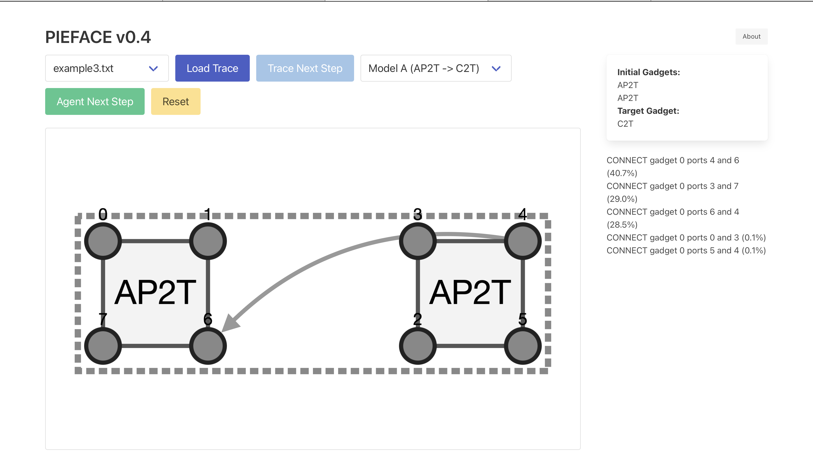
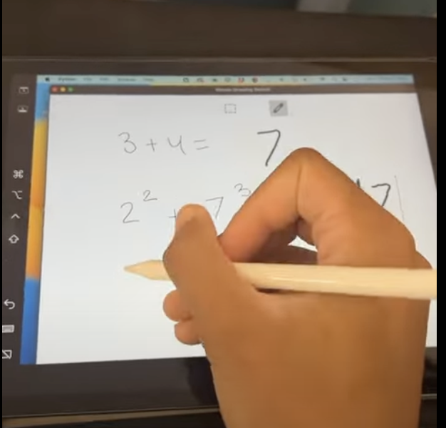

|
Zachary Burton I am a recent graduate of MIT with SB in Mathematics. Most recently, I was a Software Engineering Intern at Meta (Summer 2025), where I refactored the copyright enforcement pipeline. I am extremely interested in about AI for mathematics. I was born in NYC and raised in the UK. Outside of research, I've ran track for 10 years! (10.63s 100m). Feel free to reach out if you want to chat! |
Research |

|
Collision Thresholds on Lattices
Preprint arXiv An expository derivation using Poissonization and Laplace asymptotics to analyze random walks on lattices. |

|
Persuasiveness of LLMs in Political Discourse
paper A study of how LLM-generated content shapes political persuasion and argumentation in social media discussions. |
|
|
SIPGA Scholar Research
Singapore Agency for Science, Technology and Research (A*STAR), 2023 materials Conducted Reinforcement Learning research as a scholarship recipient. |
Selected Projects |
|
|
zOS
Local LLM self-training loop with step-by-step feedback, written with Rust & Tauri, with token repair/regen. A tinsy bit slower than the video. |
|
|
Neurosymbolic Synthesis Engine
A C++ synthesizer featuring a custom AST, evaluator, and stochastic/beam search backends. Includes warm-start heuristics and integration with the CVC5 SMT solver. |
|  |
PIEFACE: Online RLHF Sandbox
website An online sandbox for RLHF research. Built with a Flask backend, it includes a trace parser, SQL logging, reward modeling, and a distributed PPO training loop. |
|  |
Scribe AI
devpost Autocomplete for math handwriting, built to assist in digitizing mathematical notes in real-time. |
Speaking |

|
Being Black at Tonbridge
video A reflection on my experience navigating race at a UK boarding school. |

|
Why White People Shouldn’t Say the N-Word
video A talk on language, power, and context. |

|
Magnetic Gauss Law
video A physics microlecture on electromagnetism. |
|
|